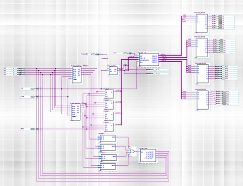

Key-Pad Lock
What is the project about?
This is the project from the Digital Logic CPRE 281 class. It is going to use the logic gates, Verilog to make a door lock design.
Identify the project
This is quite normal concept in my living environment in my country.
I had used digital door lock since 2002.
This project consisted of using Verilog to design various circuits.
We can not only use the circuits diagrams but also use the code from the Verilog.
Describe the project
The project is pretty simple that save the password of key pad lock, and reset it. There are several steps that below.
- Unlock door after a 4 digit password has been entered using push buttons, e.g., the push buttons pressed one at a time and in this order 1,2,3, and 4 would result in a code of 1234.
- Lock indicates the current entered code on 4 7-seg displays. Non-entered digits should not display any number.
- Lock checks code after the 4th button has been pressed and clears current entered code.
- Lock keeps track of incorrect attempts.
- Lock indicates when it is locked, unlocked, locked until hard reset, and entering in a new code.
- After hard reset, the code is 1111, and number of incorrect attempts is 0.
Identify Skills
The skills were that we learned from lectures. However, everything that I learned from lecture was all new for me. I learned what is the C languages, Verilog, and digital logic circuit design. I feel like this skills that I did during the final project will be used throughout my career. If I am design the computer simple hardware in the future, this skills will help me to reduce not only the price of the hardware design but also control the CPU.